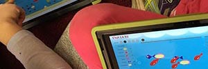
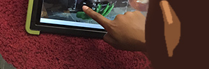
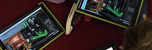
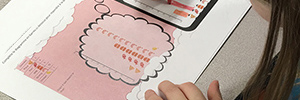

Grade K student going through exercises.

Grade 2 student going through exercises.

Grade 2 students working in groups.
Grade K student re-structuring icons by dragging.
Grade 2 students discussing a problem.

Grade K student completing the follow up written study.